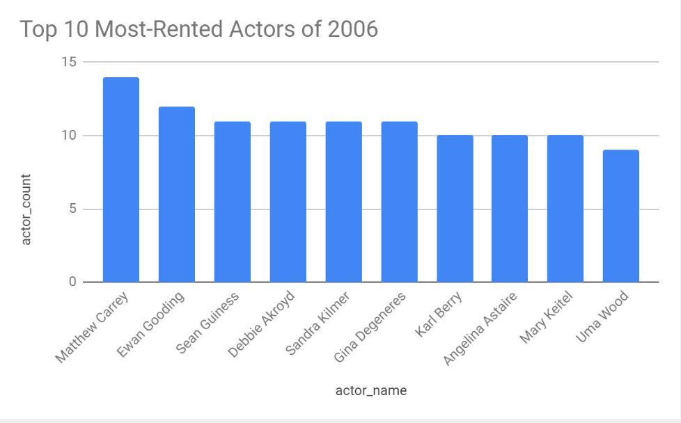

SQL Projects
On this page, you'll find projects that I've completed using SQL!
Please click on the project title to access my Github codes.
Investigating Sakila DVD Rental Database
In this project, I will be querying the Sakila DVD Rental database which holds information about a company that rents DVDs.
Project Information
I am doing this to gain an understanding of the customer base and to answer the questions listed below:
- Who were the top 10 most-rented actor of 2006?
- How many rentals are missing from each category at the Woodridge store?
- How much did the top 20 districts each spend?
- For the 15 top-spending district, by how much are they outperforming the preceding district?
While the goal of this project is to investigate the database and create visuals answering the questions listed above,
this project is also an opportunity to showcase what I've learned as part of the Nanodegree program. Some skills I would
like to draw attention to are my ability to join many tables, create window functions, create Common Table Expressions (CTE) and
perform calculations with the help of logical operators.
The querying phase was performed using PostgresSQL and the resulting tables were then saved as .csv files.
The visuals were then created using Google Sheets and Slides.